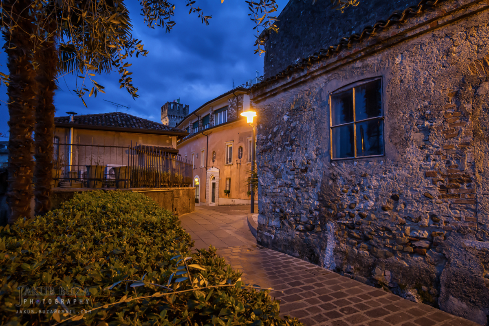

西尔米奥的老城是 13-15 世纪斯卡利杰罗与威尼斯时代叠加的窄巷迷宫：石板路、拱门、柠檬树小院与临水的“Sirmione 蓝”。半岛湖底有一处 2000 万年前的温泉源（Boiola 泉眼，湖面下 18 米、钻井 2000+ 米），自古罗马时代起就是疗养地--今天的 Aquaria 温泉中心与 Catullo 温泉酒店延续了这一身份。
看点路线
Il Percorso
- 1从城堡门进老城：主街人挤人，拐进侧巷立刻安静
- 2走到半岛西侧湖边栈道：面朝对岸群山的日落机位
- 3“Boiola 泉眼”湖面浮标：湖底温泉的出水口就在那
- 4温泉选择：Aquaria（现代水疗中心，含湖景露天池）或 Catullo Hotel（历史浴场）
老城看点
Sirmione · 5 个停留点

主街与侧巷
穿过城堡门就是主街：纪念品与 Gelato 的主旋律。但两侧每一条窄巷都通向湖边--拐一个弯就进入了本地人的洗衣房、柠檬小院与安静的水面。迷宫般的老城最舒服的打开方式是“放弃地图”。
Boiola 温泉泉眼
湖面上那个浮标之下，是一处从湖底 2000+ 米深处涌出的 37°C 硫磺泉：含硫与碘，自古罗马时代起被用于疗养。今天的两家温泉中心都从这个泉眼取水。
Aquaria 温泉
老城入口旁的现代温泉中心：露天池直接望湖，水温 33-37°C。秋天泡在热水里看湖上落日与远处群山--是 Sirmione 的“杀手级体验”。日票含多个池、蒸汽洞与休息区。
玛丽亚·卡拉斯的小岛
传奇女高音玛丽亚·卡拉斯 1950 年代在此置产度假--老城至今有以她命名的文化活动。Sirmione 的“名人温泉客”名单里还有加尔达湖畔的加布里埃莱·邓南遮（Gardone 的 Vittoriale）。

半岛全景
从对岸（Peschiera 或 Lazise 方向）或游船上看半岛：狭长的陆地伸入湖心，古堡锁住咽喉，尖端是卡图洛的废墟--“湖上的一条臂弯”，Sirmione 的名字本义就是“半岛上的居民”。
历史故事
Le Storie
壹Boiola：湖底的温泉
湖面上那个浮标之下 18 米、湖底 2000+ 米深处，有一处 37°C 的硫磺泉（Boiola 泉眼）--自古罗马时代起被用于疗养。
湖水冷、泉水热：这个反差让 Sirmione 的温泉带上了"奇迹"色彩。罗马人在这里建了温泉浴场（遗址已在湖底与半岛找到），两千年后我们继续泡同一口泉。
贰37°C 的化学
Boiola 泉水含硫、碘与钠--中世纪的医书已记载它对皮肤与呼吸道的疗效。现代水疗用它泡浴、吸入与泥疗。
泡完后的皮肤摸起来确实滑--矿物盐的"即时护肤效果"。但真正的疗效来自放松：在湖景露天池里泡两小时，没人能不放松。
叁Aquaria：湖景露天池
老城入口旁的 Aquaria 温泉中心（现代建筑）以露天池直接望湖著称：33-37°C 的水中泡着，眼前是加尔达湖的日落。
秋天（10 月）泡温泉的最佳理由：湖水尚温、游客已少、日落正好。傍晚场（17:00 后）人最少且日落正对水面。
肆Maria Callas 的 Sirmione
1950 年代，传奇女高音玛丽亚·卡拉斯在 Sirmione 置产度假--老城至今有以她命名的文化活动与纪念铭牌。
那个年代的 Sirmione 是文艺界与贵族的"隐世温泉"：逃离米兰与罗马的名人们在这里安静地泡汤。卡拉斯之后，这里的"名人温泉客"名单持续了半个世纪。
伍主街与侧巷的两种人生
穿过城堡门就是主街：纪念品店与 Gelato 的人潮是 Sirmione 的"前台"。但两侧每一条窄巷都通向湖边：本地人的洗衣房、柠檬小院与安静的水面。
Sirmione 的正确打开方式是"放弃地图"：从主街任意一条巷子拐进去，五分钟后你就会找到一片只属于你的湖岸。
陆老城禁车
整个老城（城堡以内）是 ZTL 步行区：自驾者必须停在城外停车场（€1.5-2/小时），步行或小火车入城。
这个限制反而救了老城：如果没有禁车，窄巷里的石板路撑不住旺季的日游客量。步行速的 Sirmione 是它魅力的前提。
柒从 Peschiera 坐船来
从 Peschiera del Garda 码头可坐船到 Sirmione（单程 15-20 分钟，€5-8）：湖上视角看半岛、城堡与卡图洛废墟的全貌。
比坐公交浪漫一百倍的方式：船接近半岛时，你能一眼看懂它的地理--为什么罗马富豪在这里建别墅、为什么中世纪领主在这里建城堡。
捌Sirmione 的名字
Sirmione 的名字可能来自古拉丁语 Serma/Sirmio，与半岛上的"居民"（Sirmiones）有关。卡图洛的诗把它称作"peninsularum insulaeque"（半岛与岛屿之中）--半岛中的半岛。
这个名字精确到今天仍然适用：它是一条伸入湖中的狭长陆地，最窄处仅几十米。
玖邓南遮的湖
加尔达湖西岸的 Gardone Riviera 有诗人邓南遮的怪杰宅邸 Vittoriale（一个山坡上的"诗人家园博物馆"）。虽然不在 Sirmione，但同在湖畔：加尔达的文化地图因此格外密集。
从 Sirmione 出发一日游的黄金组合：西岸邓南遮的 Vittoriale + 东岸 Malcesine 的 Mount Baldo 缆车。湖区一天根本不够。
拾日落与柠檬酒
老城西侧湖边栈道是日落机位：夕阳沉入对岸群山，水面变成金红色。这是 Sirmione 每天的"免费压轴节目"。
标配是一杯本地 limoncello（柠檬酒）或一杯白葡萄酒：加尔达湖畔的柠檬种植延续到今天--温暖的湖区小气候让这里的柠檬皮厚香浓。泡完温泉看日落，是 Sirmione 一天的完美收官。
参观贴士
Consigli Pratici
- 夏季老城步行街人满为患（日游客可达数万）：上午 9 点前或傍晚 6 点后才舒服；10 月完美
- 老城 ZTL 禁车：自驾者停城外停车场（€1.5-2/小时），步行或小火车入城
- 温泉有日场与晚场：傍晚场（17:00 后）人少且日落正对湖面
- 从 Peschiera 码头可坐船到 Sirmione（湖上视角看半岛，€5-8），比公交浪漫
- 特产是柠檬酒（limoncello）与橄榄油--湖畔小店的本地货可信度高
顺路同游
Da Non Perdere